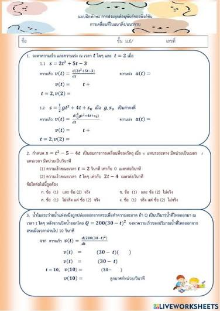

การประยุกต์ใช้อนุพันธ์

การประยุกต์ใช้อนุพันธ์ อนุพันธ์ไม่ได้ใช้แค่ “ดิฟฟังก์ชัน” แต่สามารถนำไปใช้วิเคราะห์ว่า อะไรเพิ่มขึ้น ลดลง เร็วขึ้น ช้าลง หรือมีค่ามากที่สุด/น้อยที่สุด ได้

การประยุกต์ใช้อนุพันธ์ อนุพันธ์ไม่ได้ใช้แค่ “ดิฟฟังก์ชัน” แต่สามารถนำไปใช้วิเคราะห์ว่า อะไรเพิ่มขึ้น ลดลง เร็วขึ้น ช้าลง หรือมีค่ามากที่สุด/น้อยที่สุด ได้